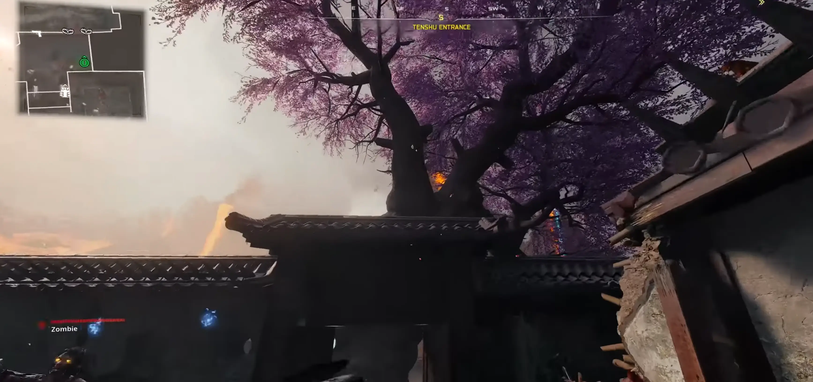
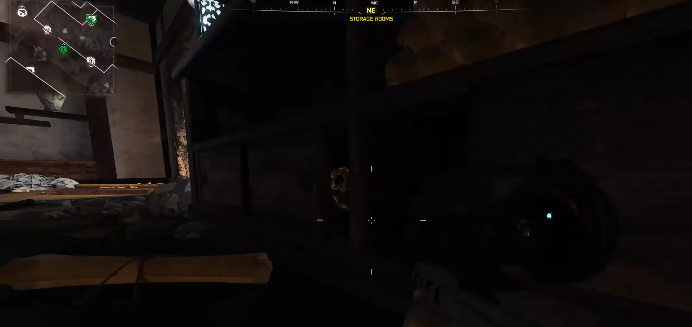
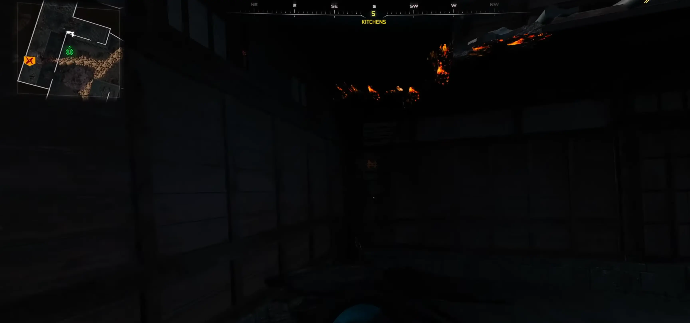
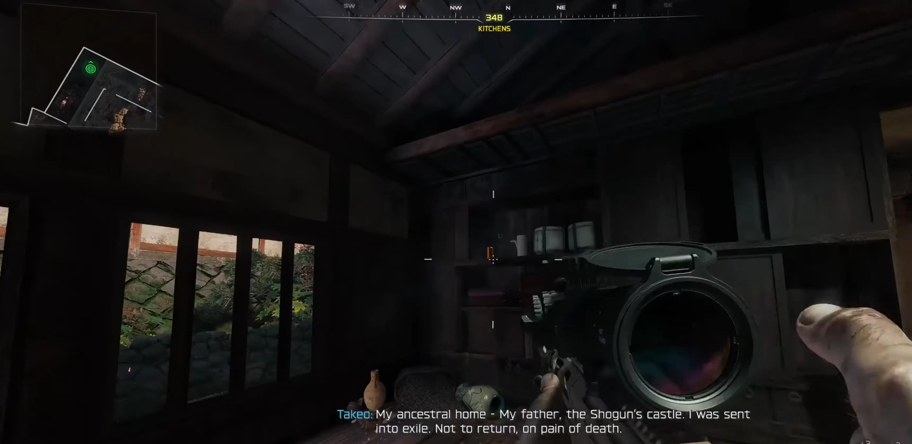

← Powrót do poprzedniej strony
CZĘŚĆ 1: DOSTĘPNE OD RAZU
Free Armor (Darmowy Pancerz):- Udaj się do Workshop (Warsztat).
- Znajdź barierę naprzeciwko automatu Vulturade.
- Spójrz w dół i strzel w ukryty przedmiot (najłatwiej go dostrzec w widoku trzecioosobowym).

x2 Double Points (Podwójne punkty):
- Leć do Tenshu Entrance (Wejście Tenshu).
- Spójrz na główny pień Blossom Tree (Kwitnące drzewo wiśni).
- Przedmiot znajduje się wysoko, tam gdzie pień rozwidla się na dwie części.

Free Insta-kill (Natychmiastowe zabójstwo):
- Idź do Storage Rooms (Magazyny), mijając automat PhD Flopper.
- Przejdź obok miejsca, gdzie pojawia się Mystery Box (Tajemnicza skrzynia).
- Szukaj na samym dole jednego z regałów.

Free Full Power (Pełna moc - odnawia ulepszenie polowe):
- Udaj się na tyły Flower Garden (Ogród kwiatowy), mijając punkt XO.
- Spójrz na dach zniszczonego budynku – przedmiot leży na poszyciu dachowym.

Free Nuke (Bomba atomowa):
- W Training Area (Obszar treningowy), przejdź obok automatu Melee Macchiato.
- Szukaj w samym rogu, tuż przy lawie.

Free Max Ammo (Maksimum amunicji):
- Zostań w Training Area, ale tym razem wejdź do budynku.
- Spójrz na tył regału – przedmiot ukryty jest na samym dole półki.

Free 500 Points (Bonusowe punkty):
- Udaj się do Kitchens (Kuchnie).
- Szukaj w jednym z rogów pomieszczenia.

CZĘŚĆ 2: NAGRODY SPECJALNE (ODBLOKOWANE PO ZEBRANIU POWYŻSZYCH)
Dopiero gdy zbierzesz wszystkie 7 powyższych wzmocnień, na mapie pojawią się dwa najcenniejsze bonusy:
Free Perk (Darmowy atut/napój):- Wróć do Kitchens (Kuchnie).
- Na jednej z półek znajdziesz wazę. Strzel w nią raz, aby ją otworzyć, i drugi raz, aby aktywować darmowy, losowy perk!

Free Fire Sale (Wyprzedaż - wszystkie skrzynie za 10 punktów):
- Udaj się do War Room (Pokój wojenny), przechodząc przez Onsen Baths (Łaźnie).
- Przedmiot znajdziesz bezpośrednio w wodzie.